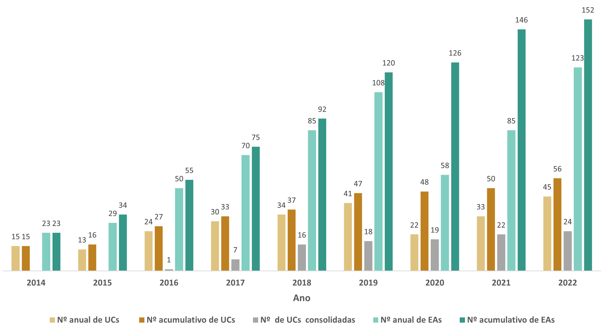
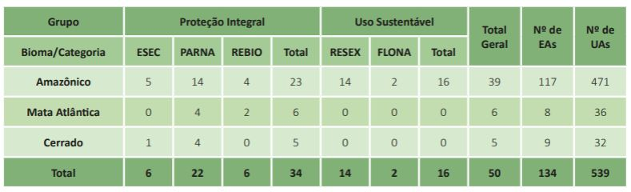

2 Implementação do Componente Florestal
Marcelo Lima Reis & Jumara Marques de Souza
Coordenação de Monitoramento da Biodiversidade - COMOB
Instituto Chico Mendes de Conservação da Biodiversidade – ICMBio
Complexo Administrativo EQSW 103/104 s/n
70670-350 Brasília, DF
Como citar: Reis, M. L. & Souza, J. M. Implementação do Componente Florestal. In: Programa Nacional de Monitoramento da Biodiversidade – Programa Monitora, Subprograma Terrestre, Componente Florestal. Relatório 2014-2022. Instituto Chico Mendes de Conservação da Biodiversidade, Brasília, 2024.
O Programa Nacional de Monitoramento da Biodiversidade - Programa Monitora, resultado de um longo processo de aprendizado institucional que contou com a participação de diversas instituições e atores, foi estruturado com base nas seguintes diretrizes:
Alvos eficazes e viáveis - estabelecimento de poucos alvos de monitoramento (táxons, grupos taxonômicos, grupos funcionais, formas de vida), criteriosamente selecionados, que desempenham papéis fundamentais nos ecossistemas e atuam como indicadores biológicos. Esses alvos respondem às mudanças ambientais e às diversas pressões em múltiplas escalas. Além disso, representam outros componentes da biodiversidade, possibilitando o seu monitoramento indireto, bem como o dos habitat e processos ecológicos (Costa-Pereira et al. 2013). Dessa forma, apresentam alta sensibilidade a alterações do ambiente (racionalidade), potencial de aplicação em diferentes situações e ampla distribuição (desempenho) e baixo custo e fácil execução (operacionalidade).
Modularidade – possibilidade de monitoramento dos alvos selecionados, inicialmente, por meio de protocolos simplificados (módulo básico), que apresentam menor custo e complexidade de execução, mas fornecem informações valiosas para avaliar o estado de conservação das unidades de conservação e a efetividade do sistema. A depender das condições técnicas, logísticas e financeiras de cada unidade de conservação, é possível implementar protocolos mais complexos ou com maior custo financeiro (módulo avançado) que ofereçam dados adicionais para ampliar as possibilidades de análises e aprimorar os resultados do Programa (Figura 2.1).
Implantação gradativa - possibilidade de instalação gradual temporal e espacial das estações amostrais (EAs) e unidades amostrais (UAs), iniciando com apenas uma ou duas EAs, conforme condições operacionais específicas de cada unidade de conservação, mas com meta de consolidar a implantação para cada um dos alvos, isto é, possuir no mínimo três EAs com coletas de dados de todos os alvos globais em até três anos, a partir do início da execução do monitoramento.
Participativo - participação de diferentes atores sociais, como gestores, técnicos e analistas ambientais, agentes ambientas temporários (ATAs), brigadistas, colaboradores terceirizados, pesquisadores, estudantes, bolsistas, voluntários e, principalmente, atores locais (comunitários, ribeirinhos, pescadores, indígenas, extrativistas etc.) nas diferentes atividades do Programa Monitora: planejamento, implantação, coleta de dados, análise, interpretação e divulgação dos resultados (Costa-Pereira et al. 2013; Brasil 2022).
O Componente Florestal foi o primeiro a ser implementado no Programa Monitora, com quatro alvos globais de monitoramento: mamíferos terrestres de médio e grande porte, aves terrícolas cinegéticas, borboletas frugívoras e plantas arbóreas e arborescentes. Alvos de monitoramento globais são aqueles com alta sensibilidade às alterações ambientais e com potencial de representar o estado de conservação de mais de um país, bioma ou região (Instrução Normativa nº 2/GABIN/ICMBio, de 28 de janeiro de 2022 - Brasil 2022). O Componente Florestal também possui alvos complementares, cujos dados de monitoramento complementam as informações dos alvos globais e representam condições de conservação local ou de interesse da gestão: Castanha-da-Amazônia, espécies cinegéticas em caça de subsistência e mamíferos terrestres e aves de médio e grande porte em áreas de manejo florestal.
Nesse capítulo, será apresentada uma breve descrição dos protocolos de coleta de dados dos alvos globais do Componente Florestal (módulo básico) e um resumo do estado de implementação desse componente para o período de 2014 a 2022. Os protocolos descritos aqui são apresentados com mais detalhes na publicação “Monitoramento da biodiversidade: roteiro metodológico de aplicação” (Nobre et al. 2014).
2.1 Protocolos de amostragem do Componente Florestal – alvos globais
No Componente Florestal do Programa Monitora, em cada unidade de conservação amostrada o monitoramento da biodiversidade é realizado em formações florestais bem preservadas ou naquelas com as melhores condições possíveis de conservação e menor grau de interferência antrópica, denominadas áreas de referência. No interior das áreas de referência, são definidas as áreas elegíveis, com base em critérios técnicos (como relevo e hidrografia) e, principalmente, logísticos (como distância da base de campo e condições de acesso), importantes para viabilizar amostragens a longo prazo.
Nas áreas elegíveis, devem ser sorteadas e instaladas pelo menos três estações amostrais (EAs). Cada EA é composta por um conjunto de unidades amostrais (UAs) dos alvos selecionados. Isso inclui uma transecção linear de até 5km (UA de mamíferos e aves - mastoaves) e ao menos quatro transecções secundárias, com um conjunto de quatro armadilhas de atração por isca (UAs de borboletas frugívoras) e uma parcela permanente em forma de cruz-de-malta (UA de plantas arbóreas e arborescentes) (Figura 2.2).
Os locais de instalação das EAs na área elegível são definidos por sorteio, a partir da Grade Nacional de Pontos Amostrais (GNPA) do Serviço Florestal Brasileiro (SFB), com adensamento de 625m (seleção do ponto central da cruz-de-malta). Alternativamente, os locais podem ser definidos dentro de um buffer de 312m ao redor de trilhas pré-existentes selecionadas.

2.1.1 Protocolo básico de monitoramento do alvo global plantas arbóreas e arborescentes
O alvo global plantas arbóreas e arborescentes inclui a amostragem de indivíduos de espécies de árvores e espécies não arbóreas de porte arborescente, como palmeiras, lianas, bambus, cactos e samambaias. Para a implantação dos protocolos de plantas é necessária uma área mínima de 200 x 200m em ambiente florestal preservado. O desenho amostral adotado é o da cruz-de-malta, que consiste em marcar quatro subunidades de 20 x 50m distribuídas em forma de cruz, orientadas para os quatro pontos cardeais (Norte, Leste, Sul e Oeste). Nenhuma subunidade da cruz-de-malta pode ser interceptada pela UA de mamíferos e aves (distância mínima de 10m) e a cruz deve distar no máximo 312,5m (metade do adensamento máximo da GNPA) da UA de mastoaves. Cada subunidade é subdividida em 10 parcelas de 10 x 10m, delimitadas por barbante presos a estacas de aproximadamente 1m (PVC de 25mm, madeira ou vergalhão). O ponto central da cruz, assim como os pontos centrais iniciais e finais de cada subunidade (N, L, S, O) são materializados por meio da fixação no solo de um cano de PVC (diâmetro ≥ 40mm) preenchido com cimento, sendo suas coordenadas registradas na base de dados do Programa Monitora (Figura 2.3).
Em cada parcela são registrados todos os indivíduos arbóreos e arborescentes que apresentem a circunferência do tronco à altura do peito (CAP) medida a 1,3m do solo, maior ou igual a 31cm, ou o diâmetro do tronco à altura do peito (DAP) maior ou igual a 10cm. Todos os indivíduos que atendem ao critério de inclusão (CAP ≥ 31 cm) são marcados com plaquetas de alumínio numeradas (individualizados) e têm sua altura total e CAP registrados. As plaquetas são fixadas na planta 10cm acima do local da medida do CAP.
Para o registro espacial de cada indivíduo marcado na parcela, são registradas as distâncias “X” e “Y” dos indivíduos em relação aos eixos da parcela, ou elaborado um croqui com a posição dos indivíduos na parcela. As amostragens são, preferencialmente, realizadas na época seca, num período máximo de três meses e a intervalos (periodicidade) de cinco anos. As principais métricas empregadas no monitoramento das plantas (protocolo básico) incluem a biomassa vegetal e parâmetros da estrutura da vegetação.
2.1.2 Protocolo básico de monitoramento do alvo global borboletas frugívoras
O alvo global borboletas frugívoras é composto por indivíduos de 13 tribos da família Nymphalidae. O protocolo de amostragem utiliza o método de captura-marcação e recaptura de indivíduos por meio de armadilhas de atração por isca do tipo Van Someren-Rydon (VSR) de 100 x 40cm. As armadilhas são dispostas em quatro linhas perpendiculares à transecção principal (UA de mamíferos e aves). Para garantir a independência amostral, a distância mínima entre as linhas é de 500m. Cada linha (UA) conta com quatro armadilhas, separadas de 30 a 50m entre si, e a primeira armadilha deve estar a pelo menos 10 m da trilha principal (Figura 2.4).
As coordenadas dos locais onde as UAs de borboletas interceptam a UA de mamíferos e aves (trilha principal) devem ser registradas e enviadas à COMOB em processo SEI, e o local materializado com a fixação no solo de um cano de PVC preenchido com cimento.
Na instalação, as armadilhas são penduradas em galhos de árvores ou outras estruturas, a aproximadamente 1m do solo e a uma distância mínima de 50cm de qualquer artefato (tronco, arbusto, galho) que possa permitir o acesso de outros animais. A isca consiste em uma mistura de banana (preferencialmente nanica) e caldo de cana, na proporção de 3kg x 1 litro (pesada com casca e misturada sem casca). A mistura é dividida e acondicionada em três recipientes com tampa, de no mínimo 1 litro (garrafas pet) e deixadas para fermentar por 48 horas. As garrafas devem ser abertas a aproximadamente cada 8 horas, aproximadamente, para liberação do gás acumulado durante a fermentação. A isca é, então, colocada em pote específico (copo plástico de 50ml) na parte inferior da armadilha (plataforma plástica).
As revisões das armadilhas ocorrem a intervalos de 24 ou 48 horas, sendo a isca trocada, obrigatoriamente, a cada 48 horas. Todos os indivíduos capturados são identificados em nível de tribo, utilizando o guia de campo ilustrado de acordo com a região específica de cada unidade (Santos et al. 2015), marcados utilizando caneta de marcação permanente (“X” na parte ventral da asa) e registrados em ficha de campo ou formulário eletrônico (ODK Collect). Em caso de dificuldade na identificação, o indivíduo deve ser fotografado dorsal e ventralmente (registrando-se o número das fotografias na ficha de campo). Após a coleta dos dados, os indivíduos são liberados no local da captura.
A amostragem de borboletas é realizada em duas campanhas anuais de sete dias cada (1 dia para a instalação das armadilhas e 6 de amostragem), para aumentar as chances de amostrar os picos populacionais. As campanhas são realizadas sempre no período de transição do final da estação chuvosa para o início da estação seca. A segunda campanha deve ser realizada de 14 a 30 dias após o término da primeira. Excepcionalmente, em unidades muito remotas e de difícil acesso e logística, e com a concordância prévia da COMOB e do CBC, pode ser realizada uma campanha única anual de 13 dias (estratégia de expedição).
A principal métrica de monitoramento utilizada para borboletas é a proporção de indivíduos por tribo.
2.1.3 Protocolo básico de monitoramento dos alvos globais mamíferos terrestres de médio e grande porte e aves cinegéticas terrícolas
No módulo básico para o alvo mamíferos de médio e grande porte, são consideradas todas as espécies dos grupos-alvo passíveis de amostragem e identificação pelo método de observação direta (censo diurno) em transecção linear. Isso inclui não apenas as espécies de mamíferos terrestres de médio e grande porte diurnas e catemerais (com atividade diurna e noturna), mas também as de hábitos noturnos, além de algumas espécies de pequenos mamíferos não voadores (famílias Caviidae e Sciuridae e o gênero Didelphis), que também podem ser amostrados pelo protocolo adotado. Já para o alvo aves cinegéticas terrícolas são consideradas apenas as famílias Tinamidae, Cracidae, Rheidae, Cariamidae, Psophiidae e Odontophoridae, que possuem um número reduzido de espécies e são relativamente de fácil identificação, pelo menos em nível de gênero. A identificação em campo é feita com o auxílio do guia de campo para identificação de espécies alvo de mamíferos e aves (Reis et al. 2015).
Este método de amostragem baseia-se na visualização direta dos espécimes e no registro da distância perpendicular entre o animal e a trilha. As amostragens são realizadas no período matutino, por uma dupla de observadores registrando apenas as visualizações no trajeto de ida. As transecções lineares podem variar de 2 a 5km de extensão (Figura 2.5) e devem estar separadas por uma distância mínima de 5 km para garantir independência amostral. Os observadores caminham pelas trilhas de forma silenciosa e cuidadosa, a velocidade variando de 1 a 1,5km/h, observando todos os estratos da floresta para registrar os animais ao longo do percurso. Todos os animais dos grupos-alvo observados por qualquer um dos monitores são registrados e identificados taxonomicamente com o Guia de Campo (fotos/desenhos). Além da identificação dos animais observados, são registrados o número de indivíduos (total ou parcial), o horário da observação, a distância perpendicular do animal até a trilha principal e o intervalo na transecção (a trilha é demarcada com plaquetas metálicas numeradas 0 a 5.000m, em intervalos de 50m).
As informações são registradas em ficha de campo ou formulário eletrônico (ODK Collect). As amostragens são realizadas, preferencialmente, na estação seca e com um esforço mínimo de 50km percorridos por ano para cada EA. Os pontos inicial e final de cada transecção são materializados com cano de PVC de pelo menos 40mm de diâmetro, preenchido de cimento e fixado no solo, e suas coordenadas são registradas em banco de dados. Sempre que possível, também são anotadas as coordenadas a cada 50m (onde há plaquetas numeradas) ou realizado o rastreamento (tracking) da trilha.
Uma das métricas para este indicador é a taxa relativa de abundância, expressa em encontros ou visualizações a cada 10km percorridos.
O presente relatório tem como objetivo analisar os resultados do módulo básico dos alvos globais do Componente Florestal do Programa Monitora, mas este capítulo abordará também dados de implementação dos protocolos avançados.
2.2 Esforço de implementação
Em 2013, após finalizada a elaboração dos protocolos dos quatro alvos globais do Componente Florestal, foi proposto um projeto-piloto com objetivo de avaliá-los em campo e aprimorá-los. Foram escolhidas 18 unidades de conservação, em três biomas:
Amazônia: PARNA Montanhas do Tumucumaque (AP), PARNA do Cabo Orange (AP), PARNA do Juruena (MT), RESEX do Cazumbá-Iracema (AC), FLONA Jamari (RO) e REBIO do Uatumã (AM).
Cerrado: PARNA de Brasília (DF), PARNA da Chapada dos Veadeiros (GO), PARNA da Serra do Cipó (MG), PARNA da Serra da Bodoquena (MS), PARNA da Chapada dos Guimarães (MT) e ESEC da Serra Geral do Tocantins (TO).
Mata Atlântica: PARNA da Serra dos Órgãos (RJ), PARNA da Bocaina (RJ/SP), PARNA do Iguaçu (PR), PARNA do Superagui (PR), REBIO de Una (BA) e REBIO Guaribas (PB).
As capacitações iniciais voltadas para pontos focais e consultores, visando implementar o projeto-piloto, foram realizadas em 2013 e início de 2014. Além das unidades de conservação inicialmente selecionadas, outras foram convidadas a participar desse processo: ESEC da Terra do Meio, FLONA de Jamari, PARNA do Cabo Orange, PARNA do Jaú e RESEX Tapajós-Arapiuns.
As coletas de dados tiveram início em 2014, com a participação de dezesseis unidades de conservação nos dois primeiros anos. Em 2016, com a adoção dos protocolos de monitoramento do Programa Monitora pelo Programa ARPA, o número de unidades participantes ampliou-se substancialmente. Esse crescimento demandou um grande esforço da Coordenação de Monitoramento da Biodiversidade (COMOB), tanto para a capacitação de pontos focais quanto no fornecimento de suporte técnico para a elaboração do desenho amostral e seleção dos locais das EAs. Esse esforço resultou em um aumento expressivo (193,7%) na adesão de novas unidades ao Programa nos anos seguintes, alcançando 47 unidades de conservação em operação em 2019. No entanto, em 2020, devido à pandemia de Covid-19, observou-se uma redução de quase 50% no número anual de unidades e EAs em operação. Contudo, em 2021 ocorreu uma recuperação com o retorno das amostragens e a inclusão de novas unidades no Monitora. Em 2022, o programa continuou a crescer, superando o número de unidades de conservação em operação registrado em 2019 (Figura 2.6).

A pandemia de Covid-19 afetou negativamente o monitoramento de todos os alvos no ano de 2020, tanto impedindo a implementação prevista do Programa em algumas unidades de conservação quanto interrompendo o esforço amostral em outras unidades de conservação que já haviam iniciado sua implementação, implicando também na desmobilização das equipes de campo.
Nos próximos anos espera-se um aumento no número de novas EAs e UAs em operação, diminuindo a diferença entre os números anuais e acumulados de EAs e UAs. Isso deve também influenciar no número de unidades de conservação consolidadas, que deve aumentar. Além disso, com a adesão de todas as unidades com vocação de monitoramento em ambientes florestais do Programa ARPA, atualmente o principal financiador do Programa Monitora na Amazônia, prevê-se uma diminuição da entrada de novas unidades de conservação no Componente Florestal do Programa nos próximos anos.
No período de 2014 a 2022, 57 UCs contaram com amostragens de pelo menos um dos alvos globais. No entanto, para efeito das análises, a ESEC da Terra do Meio e a RESEX do Rio Iriri foram contabilizadas juntas como um bloco de amostragem, e serão tradadas como um única UC a partir deste ponto.
Assim, das 56 UCs consideradas, 41 delas (73%) participam do programa ARPA e se distribuem em 18 unidades da federação e três biomas. Destas, 44 (78,6%) estão no bioma amazônico, seis (10,7%) na Mata atlântica e seis (10,7%) no Cerrado. Em relação aos grupos e categorias de unidades de conservação, 18 são de uso sustentável e todas estão localizadas no bioma Amazônia (15 RESEXs e três FLONAs), e as demais 38 são de proteção integral, sendo 23 PARNAs, oito ESECs e sete REBIOs (Figura 2.7 e Tabela 2.1).
De 2014 a 2022, 152 EAs e 789 UAs entraram em operação no Programa Monitora. A maioria das EAs (109) e das UAs (702) foi implementada no bioma Amazônia, seguido pela Mata Atlântica (23 EAs e 50 UAs) e pelo Cerrado (20 EAs e 37 UAs (Tabela 2.1). Vale lembrar que cada EA possui apenas uma UA de mastoaves e, no mínimo, uma UA de plantas e quatro de borboletas.
O maior número de unidades de conservação em operação na Amazônia em relação aos outros biomas se explica principalmente pela adoção dos protocolos do Programa Monitora pelo ARPA. Além da limitação financeira que o Cerrado e a Mata Atlântica enfrentam para implementar o Programa, há também algumas limitações técnicas para implementação das UAs de mastoaves e plantas, como a escassez de longas áreas florestais contínuas e relevo acentuado. No entanto, adequações nos protocolos estão sendo pensadas para superar esses desafios e, portanto, espera-se que nos próximos anos o número de unidades de conservação aumente nesses biomas.
Ao todo, 152 estações amostrais do Componente Florestal foram implementadas em 56 unidades de conservação participantes do Programa Monitora de 2014 a 2022. Dessas 56 unidades, 21 (37,5%) contam com uma ou duas EAs e 29 (51%) com três EAs. As 5 unidades restantes possuem 4 ou mais EAs, com destaque para a RESEX Tapajós-Arapiuns, com nove EAs e 47 UAs (Tabela 2.2).
De 2014 a 2022, 35 unidades de conservação (62,5%) enfrentaram interrupções nas amostragens, seja em algum momento ou para algum alvo. Essas interrupções foram causadas principalmente pela pandemia de Covid-19 em 2020 e 2021, mas também ocorreram devido a problemas logísticos, equívocos na instalação dos protocolos, invasões e conflitos nas unidades de conservação (Apêndice B). Vale ressaltar que duas unidades, a ESEC Alto Maués e o PARNA do Monte Roraima, executam a estratégia de “expedição” para o monitoramento, na qual o intervalo de amostragem dos alvos globais de mastoaves e borboletas pode variar de dois a cinco anos, mas todas as amostragens são realizadas também com os protocolos avançados. Nesses casos, pode-se passar a impressão errônea de que o monitoramento nessas unidades está parado, embora esteja em operação (Apêndice B).
Em 2022, a RESEX Renascer foi a única unidade de conservação considerada como parada, devido à ausência da amostragem nesse ano. Outras quatro unidades de cnservação permaneceram com status de “interrompida”, pois não realizaram coleta de dados por pelo menos dois anos consecutivo: REBIO Guaribas (6 anos), PARNA da Serra da Bocaina (4 anos), REBIO do Rio Trombetas (3 anos) e RESEX Chico Mendes (3 anos). Sete unidades de conservação retornaram ao Programa em 2022, após estarem paradas em 2021 ou interrompidas: ESEC da Terra do Meio, ESEC de Maracá, PARNA da Serra da Bodoquena, PARNA da Serra do Pardo, PARNA Nascentes do Lago Jari, REBIO Gurupi e RESEX Riozinho do Anfrísio. Além disso, seis novas unidades de conservação foram incorporadas ao Programa em 2022: ESEC de Pirapitinga (2 EAs), ESEC do Jari (3 EAs), FLONA de Carajás (1 EA), FLONA de Tapajós (3 EAs), REBIO Una (1 EA) e RESEX Verde para Sempre (2 EAs) (Apêndice B).
Das 56 unidades de conservação em operação no período de 2014-22, em apenas 24 (42,8%) estão consolidadas. A maioria das unidades de conservação em operação (45, 80,3%), incluindo diversas ainda não consolidadas, aumentou a complexidade do monitoramento, implementando pelo menos um protocolo do módulo avançado para algum alvo de monitoramento, quase todas na Amazônia. Esse cenário se deve à maior viabilidade de execução do protocolo avançado de borboletas, que pode utilizar o registro fotográfico dos indivíduos para a identificação das espécies, e às parcerias com o Jardim Botânico do Rio de Janeiro (JBRJ), o New York Botanical Graden (NYBG), o Instituto Brasileiro do Meio Ambiente e dos Recursos Naturais Renováveis (Ibama), o Serviço Florestal Brasileiro (SFB), a Universidade Federal do Paraná (UFPR) e a Empresa Brasileira de Pesquisa Agropecuária (Embrapa) para a execução do protocolo avançado de plantas. Em muitos casos, é mais viável realizar o monitoramento do protocolo avançado do que abrir e manter uma nova estação amostral. Apenas nove UCs encontram-se não consolidadas e sem aplicação de ao menos um protocolo do módulo avançado, e apenas três UCs consolidadas ainda não implementaram algum desses protocolos (Apêndice B e Figura 2.8).
Dentre as 56 unidades de conservação com amostragens nesse período, 53 amostraram mastoaves, 51 borboletas e 46 plantas. Quatro unidades amostraram apenas um alvo: a REBIO do Rio Trombetas amostrou mastoaves, enquanto a ESEC Alto Maués, a FLONA de Carajás e a RESEX Ituxi amostraram apenas plantas.
Quanto aos três alvos complementares do Componente Florestal, oito unidades de conservação executaram os protocolos específicos: RESEX Tapajós-Arapiuns aplicou o protocolo de caça de subsistência (alvo espécies cinegéticas), FLONA Jamari o protocolo de manejo florestal (alvo mamíferos de médio e grande porte e aves cinegéticas terrícolas) e seis unidades de conservação aplicaram o protocolo da Castanha-da-Amazônia (dados não consolidados e nem validados).
Quatro unidades de conservação realizaram amostragens contínuas dos alvos globais durante esses nove anos iniciais de monitoramento, embora com variações no número de alvos e de estações amostrais: FLONA do Jamari, REBIO do Uatumã, RESEX do Cazumbá-Iracema e RESEX Tapajós-Arapiuns. Além disso, 18 unidades de conservação amostraram por seis a oito anos consecutivos, com destaque para ESEC de Niquiá (7 anos), PARNA da Serra da Cutia (7 anos), PARNA da Serra da Mocidade (7 anos), PARNA do Cabo Orange (7 anos), PARNA da Amazônia (6 anos), PARNA Mapinguari (6 anos), REBIO do Jaru (6 anos), RESEX Barreiro das Antas (6 anos), RESEX Rio Ouro Preto (6 anos), RESEX do Alto Tarauacá (6 anos), todas com monitoramento contínuo sem interrupções (Apêndice B).
Os dados de implementação apresentados a seguir, organizados por alvo, referem-se ao esforço amostral das 56 unidades de conservação, realizado de 2014 a 2022. Diferentemente dos capítulos alvo-específicos, que foram produzidos a partir das análises dos dados entregues até maio de 2023. Logo, eventuais discrepâncias no número de EAs, UAs ou registros se explicam por este fato.
2.2.1 Alvo global plantas arbóreas e arborescentes
O início da implantação de UAs de plantas foi bastante promissor, com amostragem realizada em 10 unidades de conservação já no primeiro ano de monitoramento (2014). Porém, nos dois anos subsequentes, observou-se uma queda na adesão de novas UCs ao Programa. A partir de 2017, especialmente devido à parceria com o JBRJ, NYBG e a Embrapa, para aplicação do protocolo avançado, houve um aumento significativo na amostragem de plantas, particularmente no número de cruzes-de-malta (UAs) implementadas. Importante ressaltar também a execução dos cursos de capacitação no protocolo avançado de plantas (parceria COMOB, JBRJ, NYBG, UFPR e IBAMA), que sempre são consorciados com as amostragens do avançado. No entanto, a pandemia de Covid-19 interrompeu esse crescimento, que praticamente estagnou durante o período crítico da crise sanitária. Com a retomada gradual das atividades e já em 2022, os números voltaram a alcançar os patamares observados antes da pandemia (Figura 2.9).
Como no Programa Monitora a implantação das UAs dos alvos pode ser realizada de forma gradativa, as unidades de conservação optaram por uma abordagem mais cautelosa para o alvo “plantas” nos primeiros anos do Programa, distribuindo a implantação das cruzes-de-malta ao longo do tempo (instalação de uma ou duas UAs por ano). Entretanto, a partir de 2017, com o início da aplicação do módulo avançado, as unidades de conservação passaram a focar na consolidação das amostragens, implantando as três UAs e aproveitando as atividades desse protocolo para acelerar o processo de monitoramento (Figura 2.10).

De 2014 a 2022, foram registradas 46 unidades de conservação federais em operação para o alvo plantas arbóreas e arborescentes, distribuídas em 16 unidades da federação. Destas unidades de conservação, 36 (78%) são apoiadas pelo Programa ARPA e 26 (56,5%) já realizaram amostragens relativas ao módulo avançado de plantas, embora parte dos dados ainda aguarde validação (Apêndice C).
A Amazônia é o bioma com o maior número de unidades de conservação monitorando plantas (37 unidades, das quais apenas uma não é financiada pelo Programa ARPA. Em seguida, está o Cerrado com seis unidades e a Mata Atlântica com três. Em relação ao grupo e categorias de manejo, 13 unidades de conservação são de uso sustentável, sendo 11 RESEX e duas FLONAs, todas na Amazônia, e 33 de proteção integral, 22 PARNAs (15 na Amazônia, quatro no Cerrado e três na Mata Atlântica), sete ESECs (cinco na Amazônia e duas no Cerrado) e quatro REBIOs (todas na Amazônia).
No total, o Programa Monitora já possui 110 UAs de plantas (cruzes-de-malta) em operação: 96 no bioma Amazônico, oito na Mata Atlântica e seis no Cerrado (Tabela 2.3).
A maior parte das unidades de conservação (26, 56,5%) que monitoram plantas possui três ou mais UAs em operação e são consideradas consolidadas em relação a esse alvo. Como nenhuma unidade implantou mais de uma cruz-de-malta por EA, o número de EAs é igual ao número de UAs por unidade. As unidades de conservação com maior número de UAs são a REBIO do Jaru, com quatro UAs e o PARNA Mapinguari, com seis cruzes-de-malta implementadas (Tabela 2.4).
Em dezesseis unidades de conservação já foram realizadas remedições de UAs com periodicidade de cinco ou quatro anos, e em alguns casos, excepcionalmente, de três anos. Seis apresentaram três ou mais UAs: REBIO do Jaru (4 UAs), PARNA do Juruena (3 UAs), PARNA Montanhas do Tumucumaque (3 UAs), RESEX do Cazumbá-Iracema (3 UAs), Parna do Jaú (3 UAs) e RESEX do Rio Ouro Preto (2 UAs) e três UCs possuem duas UAs em operação: PARNA da Serra da Bodoquena, ESEC da Serra Geral do Tocantins e PARNA da Serra dos Órgãos. As outras sete UCs que também já passaram por remedições, mas possuem apenas uma UA são: PARNA da Serra do Cipó, PARNA de Brasília, ESEC Niquiá, PARNA Serra da Mocidade, PARNA do Superagui, PARNA da Serra da Cutia e PARNA Mapinguari. O PARNA do Jaú e a RESEX do Rio Ouro Preto, apesar de terem efetuado amostragens em 3 UAs, como ainda apresentam dados incompletos ou que foram entregues fora do prazo, não foram incluídos na análise (Apêndice C).
Em 2022, cinco novas unidades de conservação entraram em operação com o monitoramento do alvo plantas: ESEC Pirapitinga (1 UA), ESEC Jari (3 UAs), PARNA da Serra do Pardo (2 UAs), RESEX Verde para Sempre (2 UAs) e FLONA Carajás (1 UA). Além disso, oito unidades de conservação estavam com as remedições atrasadas. Seis dessas unidades de conservação apresentavam atraso de um ano: FLONA Jamari (3 UAs), PARNA do Cabo Orange (3 UAs), PARNA do Superagui (1 UA), REBIO do Tapirapé (3 UAs), REBIO do Uatumã (3 UAs) e REBIO do Gurupi (2 UAS). Outras duas apresentaram atrasos maiores e foram consideradas como “interrompidas” para esse alvo: ESEC da Terra do Meio, com dois anos e o PARNA da Serra da Bocaina, com quatro anos de atraso (Apêndice C).
Algumas unidades de conservação no Cerrado, devido à ausência de ambientes florestais, inicialmente implantaram as cruzes-de-malta em áreas savânicas, como no PARNA de Brasília (cerrado sensu stricto), na ESEC da Serra Geral do Tocantins (campo cerrado) e no PARNA da Chapada dos Veadeiros (cerrado sensu stricto). Por isso, foi necessário adaptar a amostragem, realizando as medições de circunferência a 30 cm do solo (CAS). Com a estruturação do componente de áreas abertas (Campestre e Savânico), o monitoramento da vegetação nesses ambientes passou a ser realizado com o protocolo específico para essas formações. No entanto, decidiu-se por continuar o monitoramento das cruzes-de-malta já estabelecidas, uma vez que essas já contavam com amostragens de remedição e com a aplicação do protocolo avançado, em parceria com a Embrapa. A partir de agora (2022), novas cruzes-de-malta serão implantadas apenas em áreas florestais, como matas de galeria e cerradão, com algumas adaptações no protocolo.
2.2.2 Alvo global borboletas frugívoras
A implantação do alvo borboletas frugívoras foi lenta nos dois primeiros anos de monitoramento (2014-16), mas cresceu substancialmente nos anos seguintes, especialmente a partir de 2018, com um aumento no número de EAs e, consequentemente, no número de unidades de conservação com monitoramento consolidado nesse alvo. No entanto, houve uma queda brusca em 2020 devido à pandemia de Covid-19, que coincidiu com a época de amostragem de borboletas da maioria das unidades de conservação (final do segundo semestre), resultando na coleta de dados em apenas ¼ das unidades de conservação com monitoramento de borboletas já em operação. Nos anos seguintes, a recuperação foi gradual, mas tendo já superado os números pré-pandemia em 2022 (Figura 2.11).
O mesmo padrão foi observado na progressão do número de UAs. Houve um aumento expressivo nos seis primeiros anos (2014 a 2019), com o número de UAs praticamente dobrando a cada ano, seguido por uma queda acentuada em 2020 devido à pandemia, com a coleta de dados em praticamente apenas ¼ das UAs implantadas até 2019. Entretanto, em 2021 as atividades foram retomadas na maioria das unidades de conservação que já estavam coletando antes da pandemia, totalizando 443 UAs e com retomada do crescimento em 2022, com a implantação de 96 novas UAs (Figura 2.12).
O protocolo básico de amostragem de borboletas frugívoras, com identificação taxonômica em nível de tribo, foi aplicado de 2014 a 2022 em 51 unidades de conservação, em 17 unidades da federação. No entanto, para efeito das análises, a ESEC da Terra do Meio e a RESEX do Rio Iriri foram contabilizadas juntas como um bloco de amostragem, e serão tratadas como uma única UC a partir deste ponto. Portanto, das 50 UCs, 37 (74%) são apoiadas pelo Programa ARPA e 31 (62%) já aplicaram o protocolo avançado de borboletas, embora parte dos dados ainda aguarde validação (Apêndice D).
A maioria dessas unidades de conservação (34) é de proteção integral, distribuídas em três categorias (ESEC, PARNA e REBIO) e representando mais que o dobro das unidades de uso sustentável (16), que pertencem a apenas duas categorias (RESEX e FLONA). A categoria mais representada foi PARNA, com 22 unidades, seguida pelas RESEX, com 14 unidades de conservação. A maior parte das unidades em operação (39, 78%) localiza-se no bioma Amazônia, seis unidades (12%) estão na Mata Atlântica e cinco unidades de conservação (10%) no Cerrado, totalizando 134 EAs e 536 UAs (transecções com quatro armadilhas atrativas do tipo Van Someren-Rydon). Consequentemente, a maior parte das EAs e UAs também está na Amazônia, com 117 EAs e 468 UAs (Tabela 2.5).

Das 50 unidades de conservação que participaram do Programa Monitora aplicando o protocolo básico de borboletas frugívoras de 2014 a 2022, 19 implementaram apenas uma ou duas EAs, totalizando 29 EAs e 116 UAs. Das 31 unidades restantes, já consolidadas em relação a esse alvo, a maioria (26) implementou três EAs, somando 78 EAs e 312 UAs. A RESEX Tapajós-Arapiuns é a unidade de conservação com o maior número de EAs e UAs implementadas (nove e 36, respectivamente) – (Tabela 2.6).
Das 50 unidades de conservação com o monitoramento do alvo borboletas em operação, somente 13 (26%) amostraram por cinco ou mais anos consecutivos: ESEC de Niquiá, PARNA da Amazônia, PARNA do Jaú, PARNA do Viruá, PARNA Mapinguari, RESEX Tapajós-Arapiuns e RESEX Barreiro das Antas (5 anos), PARNA Serra da Bodoquena, PARNA Serra da Cutia e PARNA da Serra da Mocidade (6 anos), PARNA do Jaru (7 anos) e FLONA de Jamari e REBIO do Uatumã (9 anos). Esse cenário se deve, principalmente, ao impacto da pandemia de Covid-19 sobre as amostragens. Somente seis unidades de conservação amostraram em três EAs: PARNA da Amazônia, PARNA Serra da Cutia, PARNA de Pacaás Novos, PARNA Mapinguari, RESEX Barreiro das Antas e REBIO do Uatumã, sendo a última a única com nove anos de amostragem (Apêndice D).
Cabe destacar que 31 unidades de conservação (62%) já aplicaram o protocolo avançado de borboletas frugívoras, isto é, amostragens com a identificação taxonômica em nível de espécie ou gênero. A identificação é feita com auxílio de especialistas em campo, por meio da coleta de indivíduos para posterior identificação em coleção científica ou pelo registro fotográfico (foto ventral e dorsal) de pelo menos 80% dos indivíduos capturados, excetuando-se as recapturas. Entretanto, como ainda não foi possível efetuar a validação de todos os registros por meio da identificação das fotos, ainda não temos o número final de unidades de conservação aplicando o módulo avançado (Apêndice D).
Em 2022, sete novas unidades de conservação iniciaram o monitoramento do alvo borboletas frugívoras: ESEC Pirapitinga (1 UA), ESEC do Jari (3 UAs), ESEC Rio Acre (1 EA), FLONA Tapajós (3 EAs), RESEX Nascentes do Lago Jari (3 EAs), REBIO Una (1 EA) e RESEX Verde para Sempre (2 EAs) e cinco retomaram as amostragens (ESEC da Terra do Meio/RESEX Rio Iriri, ESEC de Maracá, PARNA de Brasília, PARNA do Superagui e RESEX Riozinho do Anfrísio. Em apenas uma não houve amostragem (parada), RESEX Renascer, e seis permaneceram como interrompidas (há pelo menos 2 anos consecutivos sem coleta de dados): PARNA da Serra da Bocaina (6 anos), REBIO Guariba (6 anos), PARNA da Serra da Bodoquena (3 anos), PARNA da Serra dos Órgãos (3 anos), PARNA do Juruena (3 anos) e RESEX Chico Mendes (3 anos) (Apêndice B).
No bioma Cerrado, as UAs do PARNA de Brasília (1 EA) e do PARNA da Chapada dos Veadeiros (1 EA) foram inicialmente implantadas em área de savana (Campo Cerrado). No PARNA da Chapada dos Veadeiros com apenas uma amostragem validada (2017) e desde então interrompida, decidiu-se pelo cancelamento do monitoramento do alvo borboletas frugívoras no Componente Florestal. Entretanto, no PARNA de Brasília, com vários anos de amostragem, inclusive com dados do protocolo avançado, optou-se pela continuidade do monitoramento de borboletas frugívoras em área savânica, mas passará a ser considerado do Componente Campestre e Savânico (protocolo em experimentação). A reativação do monitoramento desse alvo no PARNA no Componente Florestal será considerada apenas se futuras unidades amostrais forem implementadas em ambientes de floresta do bioma, como Mata de Galeria ou Cerradão (Apêndice D).
2.2.3 Alvos globais mamíferos terrestres de médio e grande porte e aves cinegéticas terrícolas
No primeiro ano de monitoramento (2014) muitas EA/UAs de mastoaves foram implantadas (20 UAs em 13 UCs). Esse esforço foi praticamente mantido no ano seguinte, aumentando gradativamente até o ano de 2019, quando se alcançou 109 EAs em 43 unidades de conservação, sendo 26 consolidadas. No entanto, em 2020, houve uma queda significativa no número de EA/UAs devido à pandemia de Covid-19, que afetou as atividades de campo, com amostragens ocorrendo apenas no bioma amazônico e com 13 unidades de conservação a menos do que no ano anterior. Em 2021, o monitoramento voltou praticamente aos patamares pré-pandemia e o crescimento das atividades foi retomado em 2022 (Figura 2.13).
O protocolo básico de censo diurno em transecção linear foi aplicado de 2014 a 2022 em 53 UCs distribuídas por 17 unidades da federação. No entanto, para efeito das análises, a ESEC da Terra do Meio e a RESEX do Rio Iriri foram contabilizadas juntas como um bloco de amostragem, e serão tratadas como uma única UC daqui em diante. Portanto, das 52 UCs consideradas, 39 são apoiadas pelo Programa ARPA e apenas oito (15,4%) já aplicaram algum o protocolo do módulo avançado. Todas as UCs executam o protocolo TEAM e uma delas, a REBIO do Gurupi, também aplica o protocolo avançado de aves de Ponto por Escuta (Apêndice E).
Das 52 unidades de conservação em operação no período, 36 são de proteção integral (especialmente Parques Nacionais, com 22 unidades) e 17 de uso sustentável (destaque para Reservas Extrativistas, com 14 unidades), todas no bioma Amazônico (Tabela 2.7).
A maioria das unidades de conservação (41 - 78,8%) situa-se no bioma Amazônia, seis (11,3%) estão na Mata Atlântica e cinco (9,6%) no Cerrado. No total, há 140 EAs/UAs (transecções lineares – trilhas) em operação, a maior parte na Amazônia (125 EAs/UAs). Vale lembrar que no caso do alvo mastoaves só existe uma UA por EA (Tabela 2.7).
Das 52 unidades de conservação do Programa Monitora em operação do alvo mastoaves de 2014 a 2022, 19 implementaram apenas uma ou duas EAs, totalizando 29 EAs e 116 UAs. As 33 unidades de conservação restantes (63,5%) já estão consolidadas para esse alvo e a maioria (26) conta com três EAs, somando 81 EAs/UAs. A RESEX Tapajós-Arapiuns é a unidade de conservação com o maior número de EAs/EAs em operação (oito) (Tabela 2.8).
Das 52 unidades de conservação com monitoramento de mastoaves, 20 (38%) amostraram por cinco ou mais anos consecutivos. Dessas, quatro unidades de conservação coletaram dados em todos os anos desde 2014, totalizando nove anos de amostragem contínua: FLONA de Jamari, REBIO do Uatumã, RESEX do Cazumbá-Iracema e RESEX Tapajós-Arapiuns. A pandemia de Covid-19 foi a principal causa de interrupção na coleta de dados, resultando na paralização em 2020 do monitoramento em 15 (42%) das 35 unidades de conservação, que estavam em operação em 2019 (Apêndice E).
Por fim, em 2022 cinco novas unidades iniciaram o monitoramento de mastoaves: ESEC Pirapitinga (1 UA), ESEC Jari (3 UAs), FLONA Tapajós (3 UAs), REBIO Una (1 UA) e a RESEX Verde para Sempre (2 UA) e sete unidades de conservação (13,5%) retomaram as amostragens. Entretanto, duas unidades não coletaram dados nesse ano (paradas): RESEX Renascer e REBIO Gurupi e seis unidades de conservação (11,5%) estão inativas, sem amostragens há pelo menos dois anos consecutivos: RESEX Chico Mendes, REBIO Trombetas, PARNA da Serra dos Órgãos, PARNA da Serra do Pardo (3 anos), PARNA da Serra da Bocaina e REBIO Guaribas (6 anos) (Apêndice E).
2.3 Solução digital para a coleta de dados - Open Data Kit (ODK)
Em 2022, iniciaram-se os testes de um aplicativo Android de código aberto chamado Open Data Kit (ODK), que visa tornar a coleta de dados em campo mais eficiente e confiável, substituindo os tradicionais formulários em papel. O ODK permite armazenar diversos tipos de informação como textos, dados numéricos, coordenadas geográficas, áudio, imagens, vídeo e códigos de barras, sendo projetado para funcionar mesmo sem conectividade à internet (offline) após salvos em dispositivos móveis (celulares ou tablets).
As vantagens do uso do ODK para a coleta de dados em campo são significativas e sua utilização pode trazer os seguintes benefícios:
Redução de erros: com campos obrigatórios e fechados, o ODK minimiza erros e ausências de preenchimento, garantindo que todos os dados necessários sejam preenchidos corretamente, incluindo registros nulos que são igualmente validos;
Estruturação dos dados: o ODK permite que as informações sejam registradas separadamente de maneira estruturada e detalhada, ao contrário dos formulários de papel, onde algumas informações são registradas conjuntamente no campo “Observações”;
Confirmação e registro automático do local da amostragem: a função de registro de coordenadas geográficas no ODK possibilita a confirmação de que a amostragem foi efetuada e o registro de onde foi realizada, facilitando a validação e a rastreabilidade dos dados coletados;
Transmissão automática dos dados: a capacidade de enviar os dados diretamente para o SISMonitora1, assim que se tenha acesso à internet, elimina a etapa de transferência manual para planilha Excel; este recurso não apenas acelera o processo de atualização dos dados, mas também reduz o risco de erros de transcrição, aumentando a eficiência do fluxo de trabalho;
Registro de imagem: a possibilidade de captura de imagem (foto ou vídeo), associando-as diretamente aos registros correspondentes, permite que especialistas revisem e confirmem as informações no SISMonitora. Esse recurso é particularmente valioso no caso do alvo borboletas, pois contribui bastante na implementação do módulo avançado, possibilitando a identificação taxonômica no nível de espécie ou gênero.
2.4 Resultados da implentação do monitoramento
Nos capítulos seguintes (3, 4 e 5) são apresentados alguns resultados gerais do monitoramento de cada um dos alvos globais do Componente Florestal nesses nove anos de implementação do Programa Monitora (2014 a 2022). Quando pertinente, particularidades de algumas unidades de conservação ou de espécies ameaçadas são destacadas. Por sua vez, tendo em vista o caráter geral desse documento, informações adicionais detalhadas e resultados específicos por alvo para cada unidade de conservação são apresentados na plataforma on-line interativa, que complementa esta publicação.
2.5 Referências
Brasil. 2022. Instrução normativa nº 2/2022/GABIN/ICMBIO, de 28 de janeiro de 2022. Diário Oficial da União - DOU.
Costa-Pereira, R.; F. O. Roque; P. Constantino; J. Sabino & M. Uehara-Prado. 2013. Monitoramento in situ da biodiversidade: Proposta para um Sistema Brasileiro de Monitoramento da Biodiversidade. Page. Instituto Chico Mendes de Conservação da Biodiversidade. Brasília, DF.
Nobre, R. A.; M. R. Kinouchi; P. A. L. Constantino; R. C. Pereira & M. Uehara-Prado. 2014. Monitoramento da biodiversidade: Roteiro metodológico de aplicação. Instituto Chico Mendes de Conservação da Biodiversidade - ICMBio. Brasília, DF.
Reis, M. L.; D. S. L. Raíces; J. F. Martins; R. Sampaio; T. O. Laranjeira & P. A. L. Constantino. 2015. Guia de identificação de espécies alvo de aves e mamíferos. Instituto Chico Mendes de Conservação da Biodiversidade - ICMBio. Brasília, DF.
Santos, J. P.; A. V. L. Freitas; P. A. L. Constantino & M. Uehara-Prado. 2015. Guia de identificação de tribos de borboletas frugívoras. Instituto Chico Mendes de Conservação da Biodiversidade - ICMBio. Brasília, DF.
O SISMonitora é o Sistema para Gestão de Dados do Programa Monitora↩︎